对抗攻击系列：PGD Attack
本文介绍对抗攻击与防御方向的重要里程碑：PGD Attack。
论文标题与链接：Towards Deep Learning Models Resistant to Adversarial Attacks
研究动机和问题定义
这篇论文主要从优化的角度来分析模型的对抗鲁棒性，作者首先考虑一个不失一般性的分类问题：输入 $x \in \mathbb{R}^d$ 和对应的标签 $ y \in [k]$ 源自分布 $\mathcal{D}$，损失函数定义为 $L(\theta,x,y)$，其中 $\theta \in \mathbb{R}^p$ 是模型的参数，我们的目标是寻找使得经验风险 $\mathbb{E}_{(x,y) \sim \mathcal{D}} \left[L(\theta,x,y)\right]$ 最小化的模型的参数 $\theta$。
作者认为虽然经验风险最小化 (ERM)，如梯度下降，是比较成功的优化方法，但 ERM 通常不能生成鲁棒性较强的模型，很容易被对抗样本攻击。因此，我们需要将一般的 ERM 范式进行合适的增强，以提升模型抵御对抗样本的能力。作者的目标是给出对抗鲁棒模型（adversarially robust model）应该满足的一个具体的条件，然后再设计一种训练方法，使模型能够达到这个条件。简单来说就是作者规定了对抗鲁棒的模型应该满足什么要求，应该能够防御什么强度的攻击，然后提出了一种能够训练出满足这种要求的模型的训练方法。下面详细介绍。
作者提出，对于每个样本点 $x$，允许的扰动集合为 $\mathcal{S} \subseteq \mathbb{R}^d$。在图像分类任务中选择 $\mathcal{S}$ 作为扰动集合能够捕捉图像之间的相似性。例如下图中，使用 FGSM 方法在输入 $x$ 上添加扰动，这个扰动还是属于输入空间的。如果扰动很强，那么从人的感官来看，生成的图像和原图的差距就可能会变得很大。
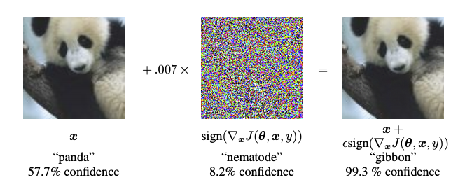
图1：对抗扰动的例子
因此，作者在这篇文章中考虑 $\ell_\infty$ 约束的扰动，也就是考虑无穷范数约束下的对抗鲁棒性问题，即扰动 $\delta$ 的无穷范数小于等于某个阈值 $\epsilon$。因此可以修改 ERM 的优化目标，允许在训练时给原始样本 $x$ 添加对抗扰动 $\delta$，新的优化目标如下：
$$ \min_{\theta}\rho(\theta), \quad\text{where}\quad\rho(\theta) = \mathbb{E}_{(x,y)\sim\mathcal{D}}\left[\max_{\delta\in\mathcal{S}} L(\theta,x+\delta,y)\right] \quad \text{w.r.t.} \quad \Vert\delta\Vert_\infty \le \epsilon \tag{1} $$
这个公式的直观理解就是通过训练使模型能够抵御 $\ell_\infty$ 约束下扰动范围内最强的攻击。作者首先找到使分类器误差最大的对抗样本（方括号内部），然后用该对抗样本作为输入，训练模型的参数 $\theta$（方括号外部），这样模型就可以有效抵御强度在 $\ell_\infty$ 约束内的扰动。下图来自于这篇博客，是 $\ell_2$ （欧几里得范数）约束下找到最大 loss 对抗样本的示意图。
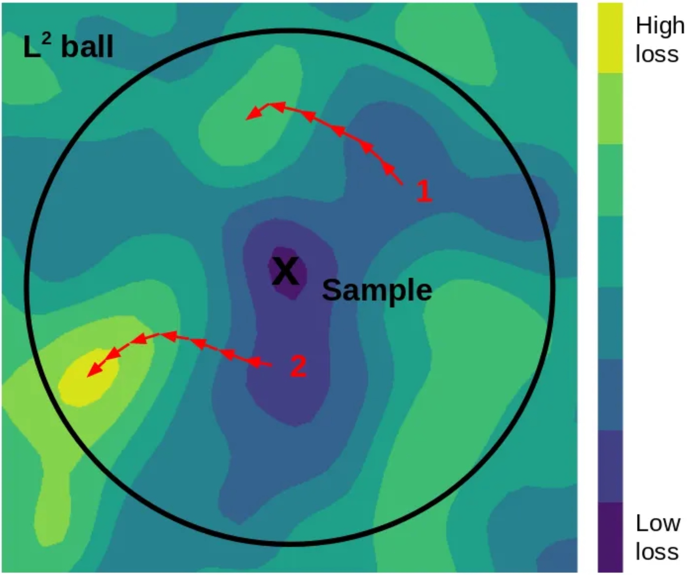
图2：$\ell_2$ 约束下带重启的 PGD，第二次迭代找到了 loss 最大的对抗样本
统一看待攻击和防御
之前的工作主要关注两个问题：
- 如果产生很强的对抗本，例如只需很小的扰动，就能使模型给出高置信度的误判？
- 如何训练模型才能使模型完全不被对抗样本攻击，或者说很难生成有效的对抗本？
公式 (1) 给出了上述两个问题的答案，从攻击的角度看，有 FGSM 及其变种等攻击方法。FGSM 属于 $\ell_\infty$ 约束下的攻击，其构造攻击样本 $\tilde{x}$ 的方法如下：
$$ \tilde{x} = x + \epsilon \text{sgn} \left( \nabla_x L(\theta,x,y) \right) $$
我们可以认为这是一种单步 (one-step) 的攻击，单步攻击要找到公式 (1) 中方括号内部所想要的 loss 最大的对抗样本明显是比较困难的。因此我们可以使用多步的 PGD(Projected Gradient Descent) 攻击：
$$ x^{t+1} = \Pi_{x+\mathcal{S}} \left(x^t + \alpha \text{sgn} \left( \nabla_x L(\theta,x,y)\right) \right) \tag{2} $$
公式 (2) 中的 $\Pi$ 表示将对抗样本投射回 $\ell_\infty$ 允许的范围内，即 $x+\mathcal{S}$ 内，什么是投影梯度下降可以看下图：
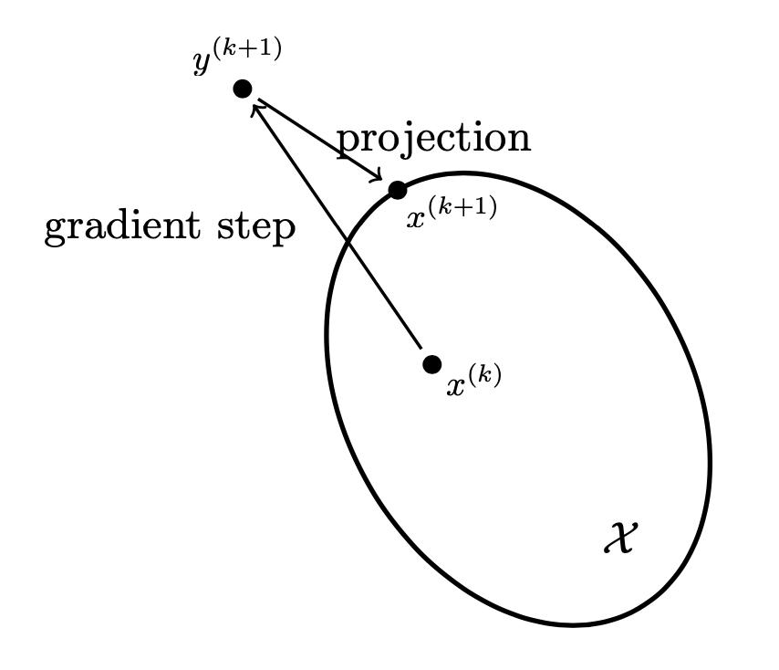
投影梯度下降 (Projected Gradient Descent)
具体的投影函数如下：
$$ \Pi_{\mathcal{X}} = \min_{z\in\mathcal{X}} \Vert x - z \Vert \tag{3} $$
公式 (3) 的意思是从 $\mathcal{X}$ 中找到一个 $z$ 使得 $x$ 到 $z$ 的距离最小，那么这个 $z$ 就是投影的结果，即图中的 $x^{(k+1)}$。类似 FGSM 的各种方法其实都是在尝试解决公式 (1) 方括号内部所定义的问题，即找一个最强的攻击样本。另一方面，从防御的角度来看，我们可以将所有的训练样本 $x$ 都替换为扰动后的处在 $\ell_p$ 超球体内使模型 loss 最大的样本，这样在优化模型参数之后，理论上模型能够防御任何位于样本 $x$ 的 $\ell_p$ 超球体内的对抗样本。
对抗样本的分布特征
理想是好的，但是现在还没有好的方法能够确保找到使公式 (1) 中 loss 最大的对抗样本，因为要找一个 loss 最大的样本点就要求我们去最大化一个非凹的函数，而且这个函数里面有很多局部最大值，所以是个比较棘手的问题。虽然可以在样本 $x$ 的 $\ell_p$ 超球体内暴力搜索，但是有点不切实际。怎么找？能否找得到？如果暴力搜索那么什么时候停止？
为此，作者在 MNIST 和 CIFAR10 数据集上做了大量实验，实验的方法也很简单：使用 PGD 不断迭代尝试寻找 $\ell_\infty$ 约束下使 loss 最大的对抗样本，而且每当 loss 收敛不再增长后，就重新选一个随机的起始点，再次进行 PGD，其实也就是暴力搜索。
作者通过实验发现，虽然有很多局部极大值点分布在空间 $x_i + \mathcal{S}$ 内，但是总体来看，模型的损失是比较集中的，而且上升也比较稳定。因此作者认为，虽然不能完全去解决公式 (1) 代表的优化问题，但是还是有迹可循的，作者列出了以下几个发现：
-
当对 $x + \mathcal{S}$ 内随机选择的起始点进行 $\ell_\infty$ 投影梯度下降时，对抗样本获得的损失以相当一致的方式增加，并迅速达达到一个比较平缓的程度，如下图所示：
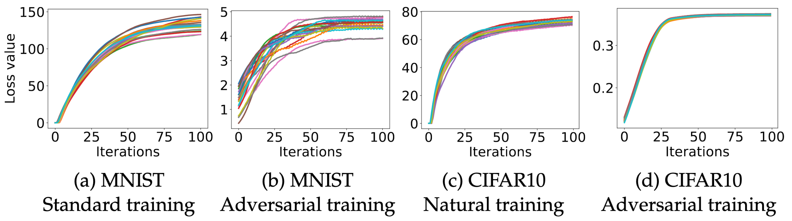
图3：不同训练方式的损失变化
-
通过进一步实验，作者发现，虽然进行了很多次（$10^5$）PGD 重启（随机均匀采样起始点），loss 的分布还是非常集中稳定的，而且没有离群点，如下图所示：
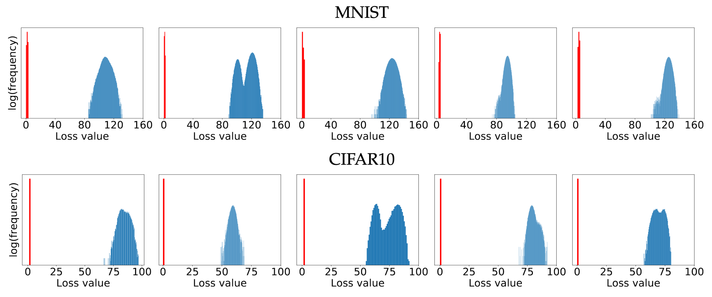
图4：5个测试集中的样本点，红色表示经过对抗训练的模型上的损失，蓝色表示普通模型上的损失
-
作者为了证明这些极大值是显著不同的，还测量了他们所有成对之间的 $L_2$ 距离和角度，并观察到距离的分布接近于 $\ell_\infty$ 球中两个随机点之间的期望距离，并且角度接近 90°。沿局部极大值之间的线段，损失函数是凸的，在端点处达到最大值，并在中间有常数因子的减少。然而，对于整个线段，损失要比随机点的损失高得多。
-
还观察到对抗扰动与样本的梯度的内积为负（夹角为钝角，这个很好理解，因为是在做梯度上升），并且随着扰动强度的增加，扰动与样本梯度方向的总体相关性逐渐下降。
作者声称，所有这些证据都表明 PGD 是一阶方法中一种比较通用的攻击方法，如果一个模型能够抵御 PGD 攻击，那么就能防御所有一阶攻击方法。其实从图 4 中可以看出，大量随机采样的极大值点的分布是比较集中的，说明很难再去找到一个具有更大值的极大值点，但不保证一定没有，所以这个地方还存在不确定性，只能说是一种实验性的结果。
一阶 (first-order) 指的是利用一阶导数，如计算 loss 关于输入的梯度。
前面已经分析了 PGD 为什么能够找到 $\ell_\infty$ 约束下最强的扰动，那么要训练一个强鲁棒性的模型也很简单，前面也提到过，那就是用 PGD 找到的强对抗样本来进行对抗训练，如图 5 所示。
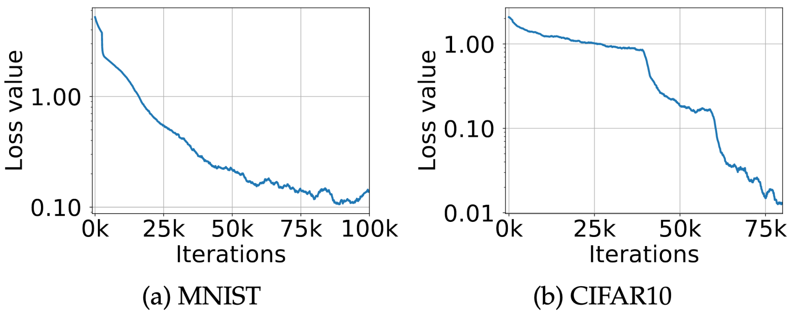
图5：在 MNIST 和 CIFAR10 上使用 PGD 方法进行对抗训练，loss 持续下降，模型鲁棒性持续提升
作者还利用 Danskin’s theorem 证明 PGD 给出的梯度方向是最好的（往最强对抗样本的方向），但是 Danskin’s theorem 只能应用在连续可微函数上，实际上训练集只是分布 $\mathcal{D}$ 上的采样，所以只能算作不严格的理论支撑。
网络容量和对抗鲁棒性的关系
网络的结构和容量其实和模型的对抗鲁棒性有很大的关系，下图左边是一个很简单的数据集，只需要一个简单的分类器。中间的五角星是 $\ell_\infty$ 约束下的对抗样本，那么分类器就会出错，所以需要右图红色的鲁棒性很强的分类器。
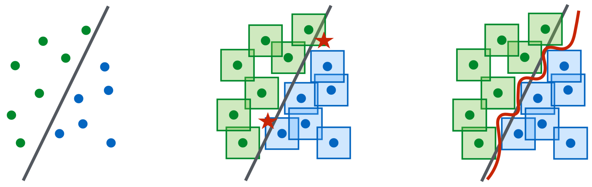
图6：强鲁棒性需要强分类器
作者进一步对模型的大小和鲁棒性之间的关系做了实验。对于 MNIST 数据集，考虑一个简单的卷积网络，研究当将网络的规模扩大一倍（即 filter 的数量增加一倍，全连接层的大小增加一倍）时，它的鲁棒性将发生什么变化。初始的网络第一层是有 2 个 filter 的卷积层，接着是一层带有 4 个 filter 的卷积层，卷积层之后是 2 × 2 max-pooling层，然后一个有 64 个神经元的全连接层。取 $\epsilon = 0.3$ 作为对抗样本的最大强度。对于 CIFAR10 数据集，使用 ResNet 模型，并使用了随机 crop 和 flip 进行数据增强，另外还对单张图像做了 standardization。为了增加容量，作者将网络宽度变成了原来的 10 倍，总共五个残差块，每个 residual block 有 (16, 160, 320, 640) 个 filter。该网络在使用自然样本训练时，准确率可以达到 95.2%，取 $\epsilon = 8$ 作为对抗样本的最大强度。图 7 展示了不同训练方法得到的模型准确率和模型容量的关系。
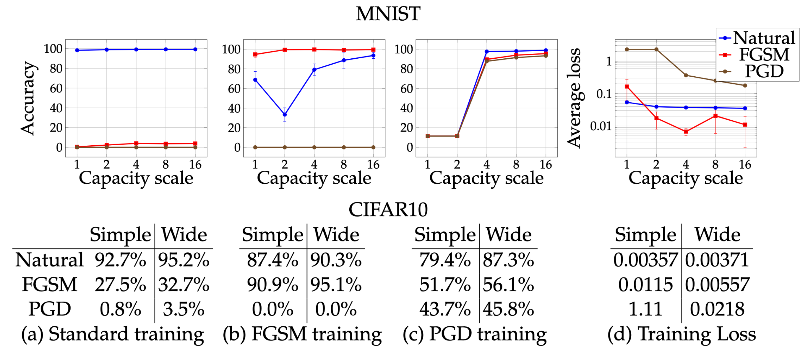
图7：网络容量对网络性能的影响。在 MNIST 和 CIFAR10 上对不同容量的网络进行了训练：(a) 使用自然样本训练，(b) 使用 FGSM 生成的对抗样本，(c) 使用 PGD 生成的对抗样本，(d) 损失变化。
从上图可以看出：
- 容量越大的模型越容易进行对抗训练，网络容量和PGD 的平均 loss 成反比（第四列）。
- FGSM 训练的网络只对 FGSM 生成的对抗样本有鲁棒性，对 PGD 生成的对抗样本基本没有鲁棒性（第二列）。
- PGD 训练的网络鲁棒性较强，能防御对 FGSM 生成的对抗样本（第三列）。
- 从第三列图可以看出，capacity 比较小的时候，使用 PGD 训练，网络学不到有用的知识，准确率很低。一个解释是网络把自己的 capacity 都拿去应对 PGD 生成的对抗样本了，因此没有更多的参数可以去拟合要学习的映射关系。
另外，作者发现模型的容量越大，在该模型上生成的对抗样本的迁移性就越差，原文附录 B 有详细介绍。
实验：训练鲁棒的网络
作者使用 PGD 在 MNIST 和 CIFAR10 上进行了实验，使用 PGD 生成的对抗样本对要攻击的模型进行对抗训练，然后评估其鲁棒性。具体的实验设置这里就不赘述了，可以看原文。
MNIST 上的结果
表 1 中的 Source 表示不同的代理模型，都是攻击经过对抗训练的模型 A。A 表示白盒攻击，A’ 和 B 表示黑盒攻击。可以看到黑盒攻击下，经过对抗训练的模型也有很高的准确率。
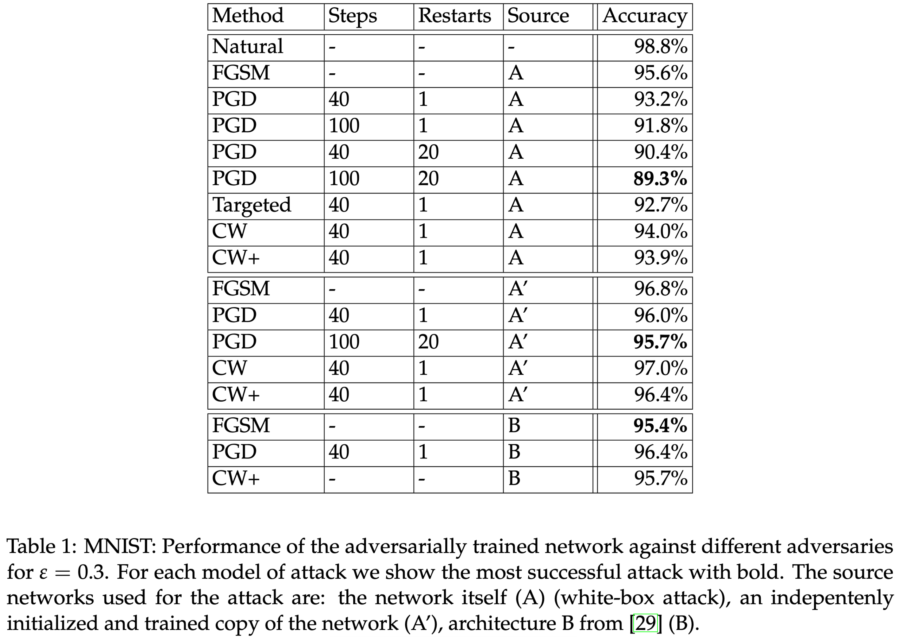
CIFAR10 上的结果
从表 2 中可以看出，即便进行了对抗训练，使用更强的扰动，$\epsilon=8$，黑盒白盒都可以使模型的性能有很大的下降。
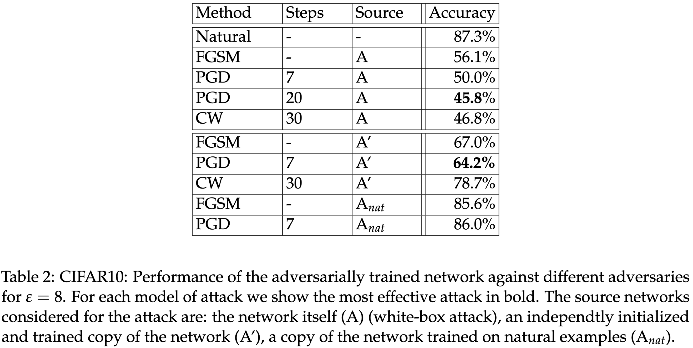
不同的攻击强度
从下图 (a) 和 (b) 可以看出，经过 $\ell_\infty$ PGD 和 DBA 对抗训练的模型，对 $\ell_\infty$ 攻击都很鲁棒，但是经过 $\ell_\infty$ PGD 对抗训练的模型对 $\ell_2$ 攻击有一定的鲁棒性， 而 DBA 对抗训练的模型鲁棒性则很差。图 (c) 和 (d) 也表明了经过 $\ell_\infty$ PGD对抗训练的模型对 $\ell_2$ 攻击也很鲁棒。证明了使用 PGD 对抗训练的模型有较强的鲁棒性。
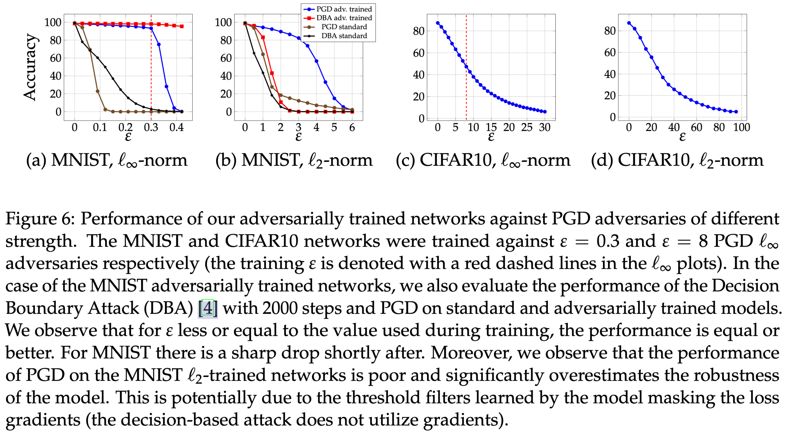
总结
这篇文章比较深入地分析了 $\ell_\infty$ 约束下的对抗攻击，并提出了防止 $\ell_\infty$ 攻击的 PGD 对抗训练方法。文章特别对公式 (1) 方括号内部的优化问题进行了详细的讨论，发现了在某个样本 $x$ 的 $\ell_\infty$ 超球体内局部极大值的分布是比较集中的 (参考图4)，虽然很难严格证明，但是使用 PGD 对抗训练提升模型鲁棒性是一种较为可行的方法。